👥 Criação de Segmentos
Tutorial completo passo a passo para criar e gerenciar segmentos de grupos do WhatsApp
📚 Páginas Relacionadas
Por que criar segmentos?
Os segmentos são uma forma de organizar grupos do WhatsApp de maneira eficiente:
- Organização: Agrupe grupos por tema, categoria ou fonte
- Facilidade: Não precisa selecionar grupos toda vez que for fazer um disparo
- Eficiência: Crie uma vez e use várias vezes
- Filtragem: Filtre grupos por nome ou prefixo rapidamente
Se você tem 50 grupos com o prefixo "Teste SaaS", você pode criar um segmento chamado "Segmento Teste SaaS" selecionando apenas esses 4 primeiros grupos. Assim, quando for fazer um disparo, você só precisa selecionar o segmento ao invés de escolher os grupos um por um.
Passo 1: Acessar a Página de Segmentos
Para criar um novo segmento:
1.1 Navegar até Segmentos
- No menu lateral esquerdo, localize a opção "Segmentos" e clique nela
- Ou acesse diretamente em:
https://app.orbitsender.com/segments - Você será direcionado para a página de segmentos
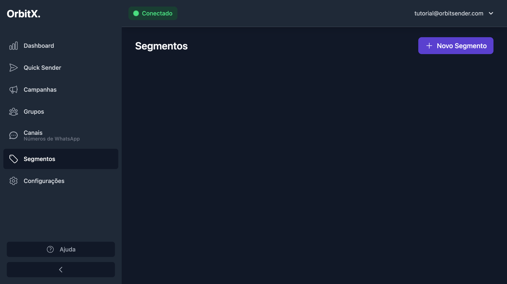
1.2 Iniciar Criação
- Na página de segmentos, localize o botão "Novo Segmento" (geralmente no canto superior direito)
- Clique no botão para iniciar o processo de criação
- Você será direcionado para o assistente de criação de segmentos
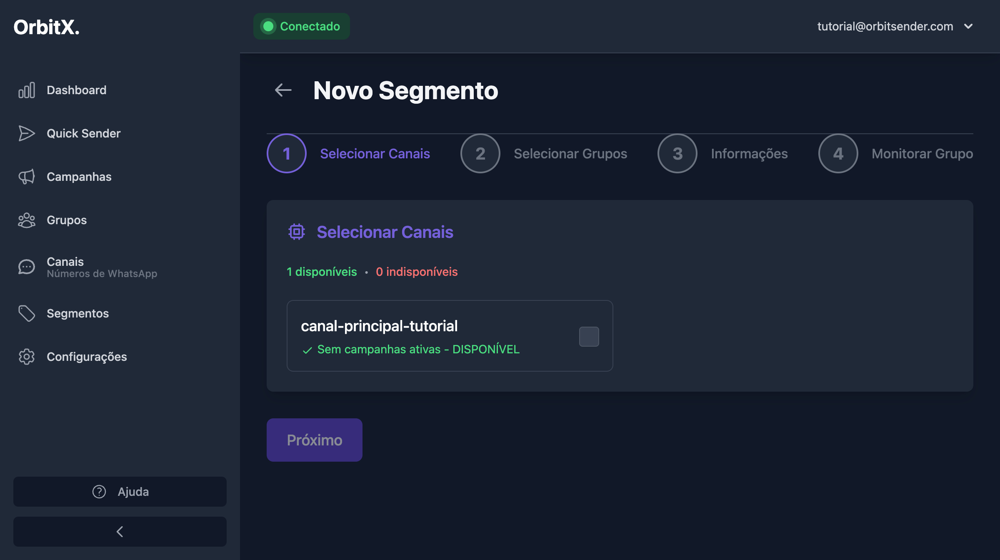
O assistente possui 4 passos principais:
- Selecionar Canais: Escolher quais canais usar
- Selecionar Grupos: Escolher quais grupos incluir
- Informações: Dar um nome ao segmento
- Monitorar Grupo: Configuração opcional de monitoramento
Passo 2: Selecionar o Canal
O primeiro passo é selecionar qual canal (número de WhatsApp) você quer usar para este segmento:
2.1 Visualizar Canais Disponíveis
- Na etapa 1, você verá uma lista de canais disponíveis
- Cada canal mostra seu nome e status (Disponível ou Indisponível)
- Canais com campanhas ativas aparecem como indisponíveis
Você pode selecionar um ou múltiplos canais. Se selecionar múltiplos canais e eles estiverem no mesmo grupo, o sistema fará a divisão igualitária entre eles automaticamente.
2.2 Selecionar o Canal
- Localize o canal que você deseja usar (ex: "canal-principal-tutorial")
- Clique na checkbox ao lado do nome do canal para selecioná-lo
- O botão "Próximo" será habilitado quando pelo menos um canal for selecionado
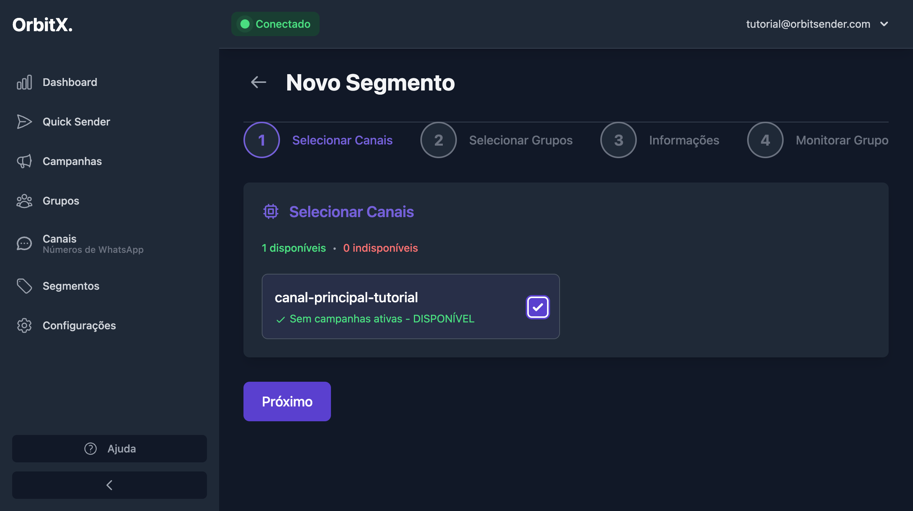
2.3 Avançar para o Próximo Passo
- Após selecionar o canal, clique no botão "Próximo" na parte inferior da página
- O sistema iniciará a sincronização para carregar os grupos do canal selecionado
Passo 3: Aguardar Sincronização dos Grupos
⚠️ IMPORTANTE: Quando você clicar em "Próximo", o sistema começará a sincronizar os grupos do canal.
3.1 Processo de Sincronização
- Após clicar em "Próximo", você verá uma tela de "Sincronizando..."
- O sistema está buscando todos os grupos do WhatsApp no canal selecionado
- Aguarde aproximadamente 30 segundos para garantir que todos os grupos sejam carregados
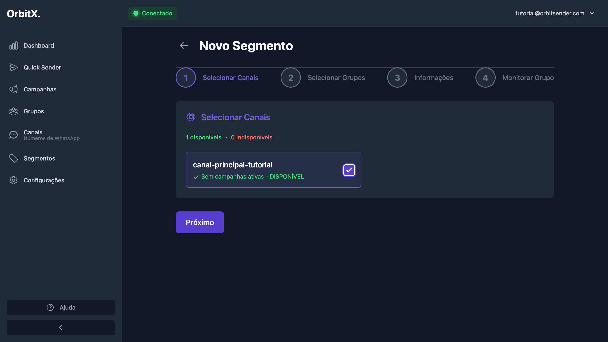
Não clique em "Próximo" ou feche a página durante a sincronização. Aguarde até que apareça a mensagem "Concluído" ou até que os grupos sejam exibidos na tela. A sincronização pode levar de 20 a 40 segundos dependendo da quantidade de grupos no seu WhatsApp.
3.2 Verificar Sincronização Concluída
Você saberá que a sincronização terminou quando:
- Ver o status "Concluído" na seção de status
- Ver a mensagem indicando quantos grupos foram carregados (ex: "365 grupos carregados")
- Ver a lista de grupos aparecer na tela
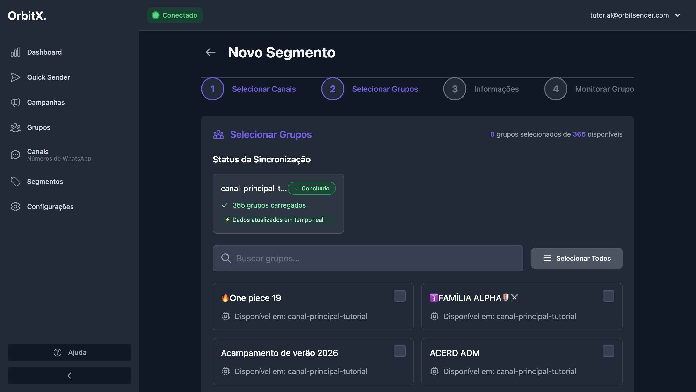
Passo 4: Filtrar e Selecionar Grupos
Após os grupos serem carregados, você pode filtrá-los e selecionar os que deseja incluir no segmento:
4.1 Usar o Campo de Busca
- Localize o campo de busca com o placeholder "Buscar grupos..."
- Digite o nome ou prefixo dos grupos que você deseja filtrar
- Por exemplo, se você quer grupos que começam com "Teste SaaS", digite "Teste SaaS"
- A lista de grupos será filtrada automaticamente conforme você digita
O campo de busca funciona em tempo real. Conforme você digita, a lista é filtrada automaticamente mostrando apenas os grupos que contêm o texto digitado no nome.
4.2 Verificar Grupos Filtrados
Após aplicar o filtro, você verá apenas os grupos que correspondem ao critério de busca:
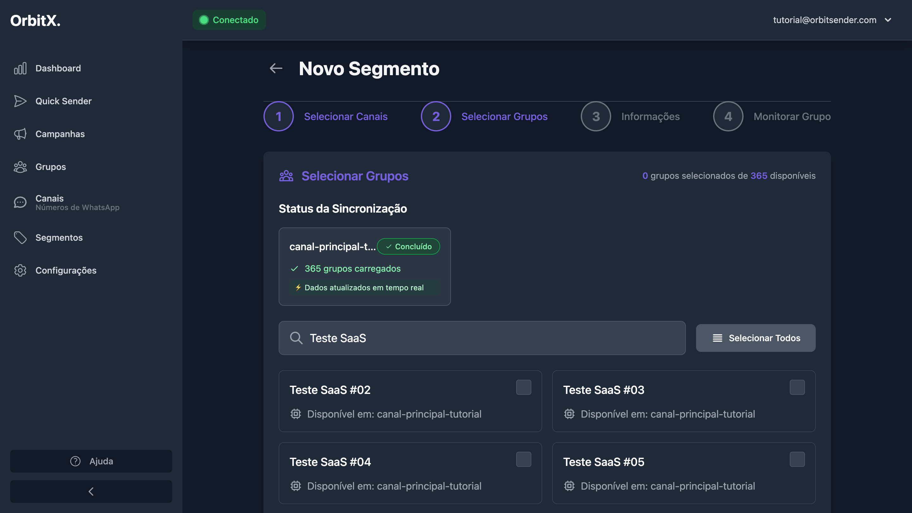
No exemplo acima, foram filtrados todos os grupos que contêm "Teste SaaS" no nome, mostrando grupos como "Teste SaaS #02", "Teste SaaS #03", etc.
4.3 Selecionar os Grupos Desejados
- Após filtrar os grupos, selecione os que deseja incluir no segmento
- Clique na checkbox ao lado de cada grupo para selecioná-lo
- Você pode selecionar um ou vários grupos ao mesmo tempo
- O contador no topo mostra quantos grupos estão selecionados (ex: "4 grupos selecionados de 365 disponíveis")
Se você quer criar um segmento com os 4 primeiros grupos "Teste SaaS", você pode filtrar por "Teste SaaS" e selecionar os primeiros 4 grupos da lista (Teste SaaS #02, #03, #04 e #05).
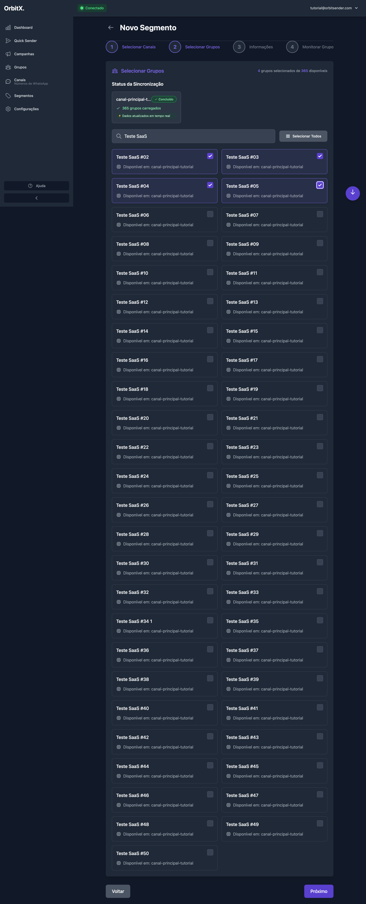
4.4 Avançar para Informações
- Após selecionar os grupos desejados, clique no botão "Próximo"
- Você será direcionado para a etapa 3 (Informações do Segmento)
Passo 5: Preencher Informações do Segmento
Na etapa 3, você precisará dar um nome ao seu segmento:
5.1 Visualizar Resumo
Na tela de informações, você verá um resumo do que foi selecionado:
- Quantos canais foram selecionados (ex: "1 Canais Selecionados")
- Quantos grupos foram selecionados (ex: "4 Grupos Selecionados")
- Total de grupos disponíveis no canal
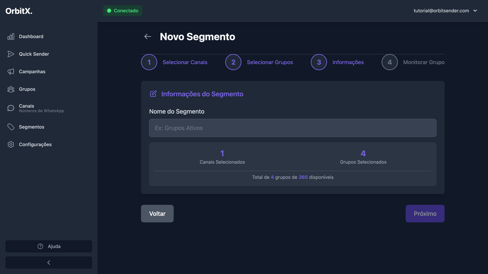
5.2 Preencher Nome do Segmento
- Localize o campo "Nome do Segmento"
- Digite um nome descritivo que facilite a identificação do segmento
- Exemplos de nomes:
- "Segmento Teste SaaS"
- "Grupos de Tecnologia"
- "Promoções Shopee"
- "Grupos Premium"
- O botão "Próximo" será habilitado quando você preencher o nome
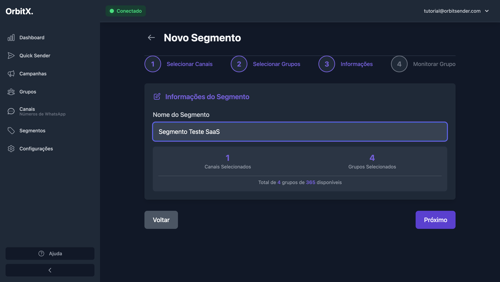
- Use nomes descritivos que você lembre facilmente
- Se você tiver muitos segmentos, isso facilita encontrá-los
- Ex: "Segmento Teste SaaS" indica claramente que são grupos relacionados ao prefixo "Teste SaaS"
5.3 Avançar para Monitoramento
- Após preencher o nome, clique no botão "Próximo"
- Você será direcionado para a etapa 4 (Monitorar Grupo)
Passo 6: Configurar Monitoramento (Opcional)
A etapa 4 é sobre monitoramento de grupos, uma funcionalidade opcional:
6.1 Entender o Monitoramento
O monitoramento permite acompanhar atividades específicas de um grupo selecionado. No entanto, esta é uma funcionalidade avançada que pode ser configurada posteriormente.
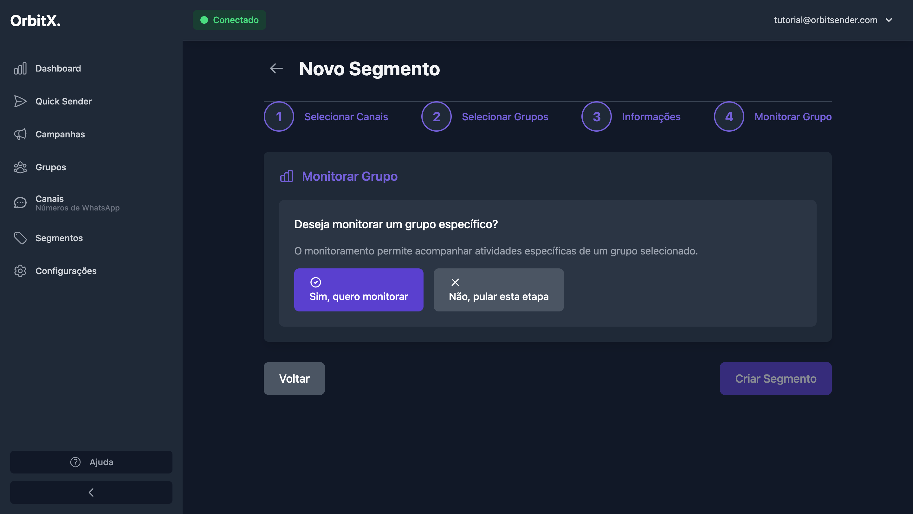
6.2 Pular a Etapa de Monitoramento
- Na tela de monitoramento, você verá duas opções:
- "Sim, quero monitorar" - Para configurar monitoramento
- "Não, pular esta etapa" - Para não configurar monitoramento agora
- Para criar o segmento sem monitoramento, clique em "Não, pular esta etapa"
- Ao clicar nesta opção, o segmento será criado automaticamente
Você pode ativar o monitoramento posteriormente editando o segmento. Por enquanto, recomendamos pular esta etapa para manter o processo simples.
Passo 7: Verificar Segmento Criado
Após clicar em "Não, pular esta etapa", o segmento será criado automaticamente e você será redirecionado para a página de segmentos
(https://app.orbitsender.com/segments):
7.1 Segmento Criado com Sucesso
Você verá o novo segmento na lista de segmentos com:
- Nome do segmento (ex: "Segmento Teste SaaS")
- Quantidade de canais utilizados (ex: "1 canais")
- Quantidade de grupos incluídos (ex: "4 grupos")
- Status dos canais com marcação de verificado
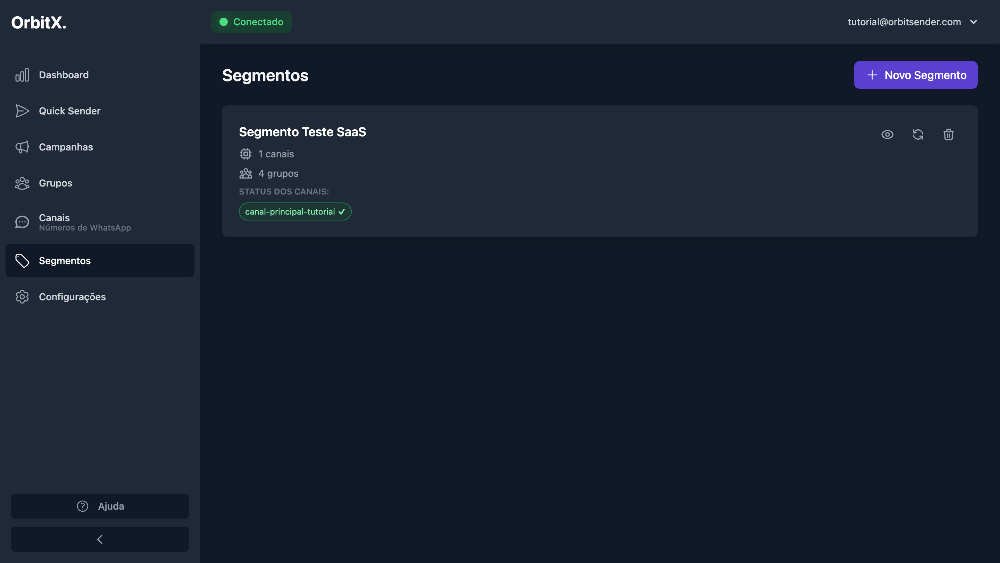
Seu segmento foi criado com sucesso! Agora você pode usar este segmento no Quick Sender ou ao criar campanhas. Os grupos selecionados estão salvos e não precisam ser selecionados novamente.
Resumo do Processo Completo
Acessar Segmentos
No menu lateral, clique em "Segmentos" (https://app.orbitsender.com/segments) e depois em "Novo Segmento"
Selecionar Canal
Selecione o canal desejado marcando a checkbox e clique em "Próximo"
Aguardar Sincronização
Aguarde cerca de 30 segundos para o sistema carregar os grupos
Filtrar Grupos
Use o campo de busca para filtrar grupos por nome ou prefixo
Selecionar Grupos
Marque as checkboxes dos grupos que deseja incluir no segmento
Preencher Nome
Digite um nome descritivo para o segmento e clique em "Próximo"
Pular Monitoramento
Clique em "Não, pular esta etapa" para finalizar sem monitoramento
Segmento Criado!
Verifique o segmento na lista e comece a usá-lo em seus disparos
Gerenciando Segmentos
Na página de segmentos (https://app.orbitsender.com/segments), você pode realizar as seguintes ações:
📋 Ver Detalhes
Clique no botão "Ver detalhes" para ver informações completas sobre o segmento, incluindo lista de grupos e canais.
🔄 Revalidar Grupos
Use o botão "Revalidar grupos" para atualizar a lista de grupos caso você tenha adicionado ou removido grupos do WhatsApp.
🗑️ Excluir
Clique em "Excluir" para remover um segmento que não usa mais. Esta ação não pode ser desfeita.
Dicas e Boas Práticas
✅ Boas Práticas
- Use nomes descritivos: Facilite a identificação do segmento
- Organize por categoria: Agrupe grupos similares juntos
- Selecione grupos relevantes: Escolha apenas grupos que você realmente usa
- Mantenha atualizado: Revalide grupos periodicamente
- Use filtros: Aproveite o campo de busca para encontrar grupos rapidamente
⚠️ O que evitar
- Não interrompa sincronização: Aguarde os grupos carregarem completamente
- Não crie segmentos muito grandes: Isso pode tornar a seleção lenta
- Não use nomes genéricos: Isso dificulta encontrar segmentos depois
- Não esqueça de selecionar grupos: Um segmento sem grupos não é útil
Próximos Passos
Agora que você criou seu segmento, está pronto para fazer disparos: